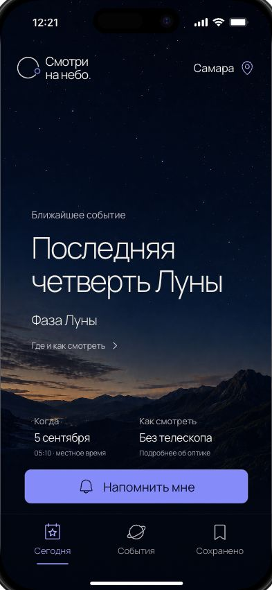

В рабочем экране — реальная последняя четверть Луны; в концепте — Дракониды. Системная строка и нижняя безопасная зона добавлены мобильным окружением. Луна из иллюстрации убрана, чтобы не изображать неверную текущую фазу.